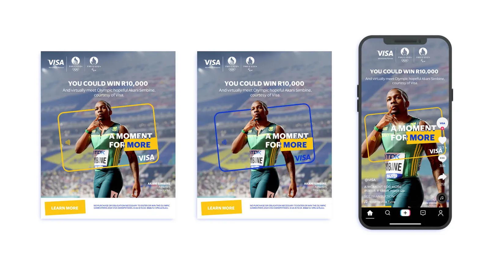
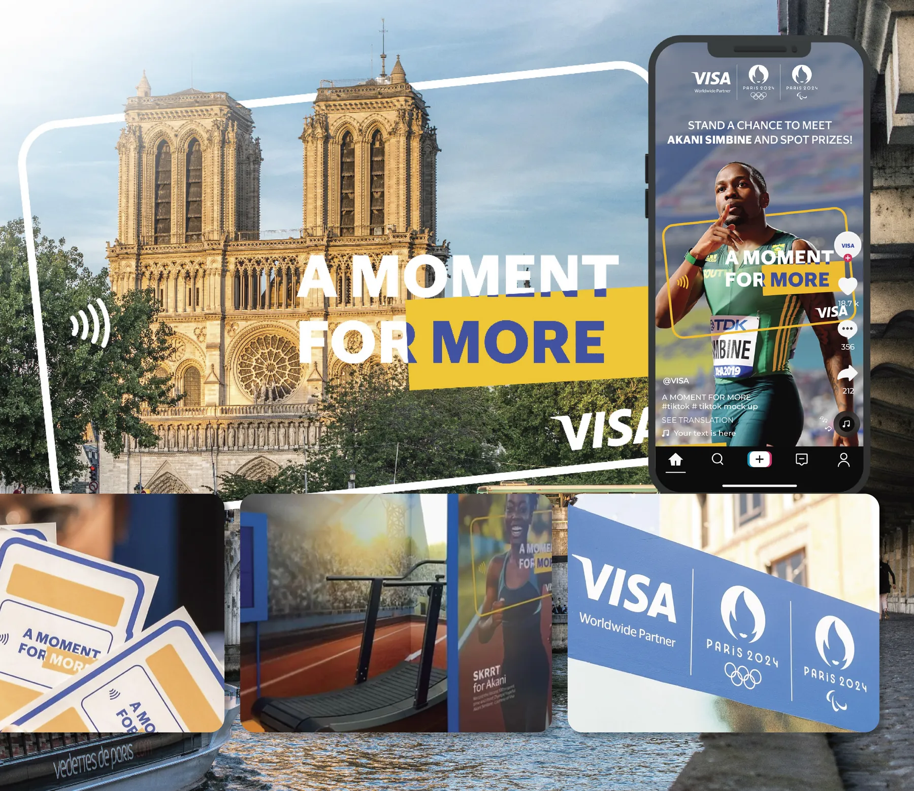
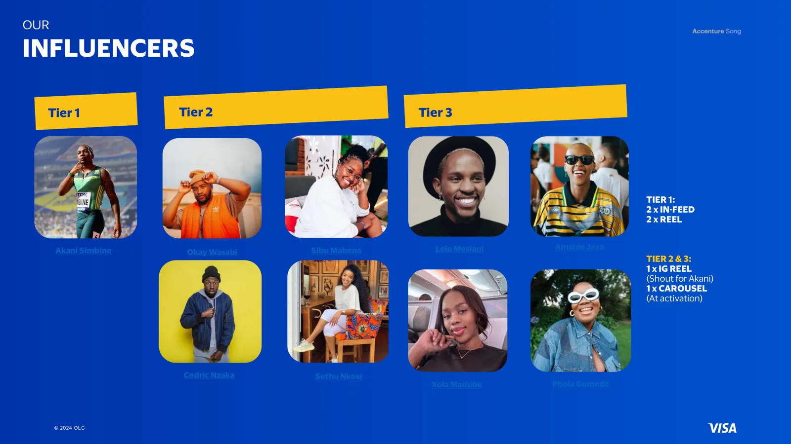
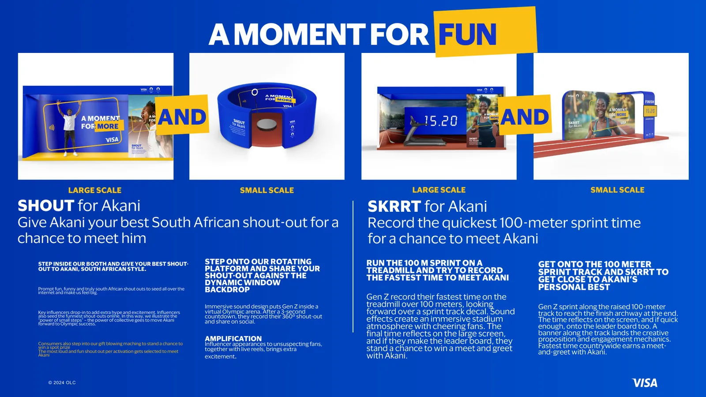
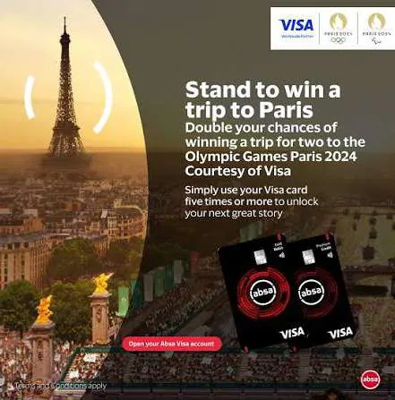
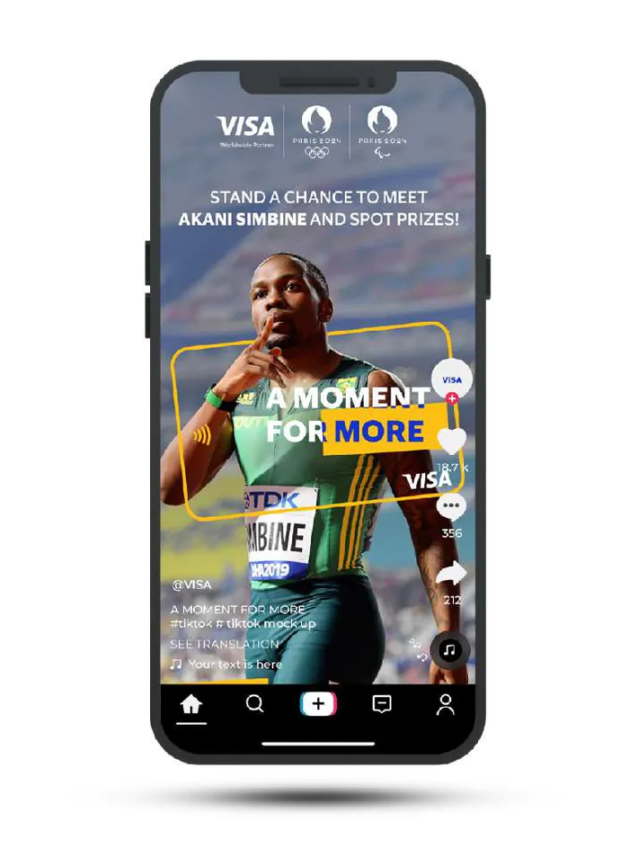
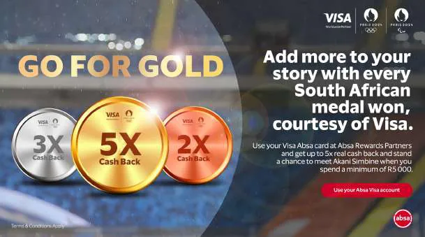

Visa · Paris 2024 Olympic GamesA Moment for More
- Role
- Creative Lead, campaign and digital
- Year
- 2024
- Market
- South Africa
- Audience
- Millennials and Gen Z
- Channels
- TikTok, Meta, in-game media, experiential, print
The Olympic Games are one of Visa's biggest sponsorship properties, and the Paris 2024 brief in South Africa was to build brand love and preference while getting Millennials and Gen Z to use their Visa cards in store, online and across borders.
Our research surfaced three truths about this audience. They want to live life on their own terms, they value experiences and presence over possessions, and above all they crave a life well lived. One message could never land the same way with everyone, so we built a platform flexible enough to feel personal to each person: A Moment for More, the idea that every payment moment is a push towards more, whatever more means to you.
The platform ran across TikTok, Meta and in-game media with sprinter Akani Simbine as its hero and nine influencers across three tiers amplifying it, giving fans a chance to win R10,000 and meet him. We extended it into A Moment for Fun, an activation where Gen Z could give Akani their best South African shout-out or race a 100-metre sprint for a chance to meet him, and into issuer campaigns such as Absa's, where cardholders who spent R5,000 on their Visa card during the Games were entered into a draw to meet Akani.
In the same year I led the digital and print campaigns for Visa's sponsorships of both the Olympics and the ICC Men's T20 World Cup, with one consistent message across social and web.
That work has grown into a wider partnership with Visa's marketing services team, for whom I lead creative on the campaigns Visa runs with its partner banks across Africa. In Visa's own report for the first quarter of its 2026 financial year, Investec's Pep Guardiola FIFA campaign lifted cross-border transactions by 11% and spend per active card by 5%, and CBZ's AFCON campaign in Zimbabwe grew Visa payment volume by 28% in a month. Together with FNB's It Starts Here and Chipper Cash's AFCON launch in Nigeria, those four campaigns brought Visa $2.4M in revenue in a single quarter.
My credits
- Strategy
- I helped turn three audience truths about Millennials and Gen Z into a single flexible platform, A Moment for More.
- Creative direction
- I led the campaign across TikTok, Meta, in-game media and print, with Akani Simbine as its hero and nine influencers amplifying it.
- Activation
- I shaped A Moment for More into A Moment for Fun, the shout-out and 100-metre sprint activation for Gen Z.
- Partners
- I adapted the platform for issuer banks such as Absa, so partners could run it under their own brands.
- Portfolio
- In the same year I led digital and print for Visa's ICC Men's T20 World Cup sponsorship, keeping one message across both properties.
- Partner banks
- I lead creative for Visa's marketing services team on campaigns with its partner banks, including FNB, Investec, CBZ and Chipper Cash.
Visa partner-bank campaignsVisa Q1 FY26 marketing report






